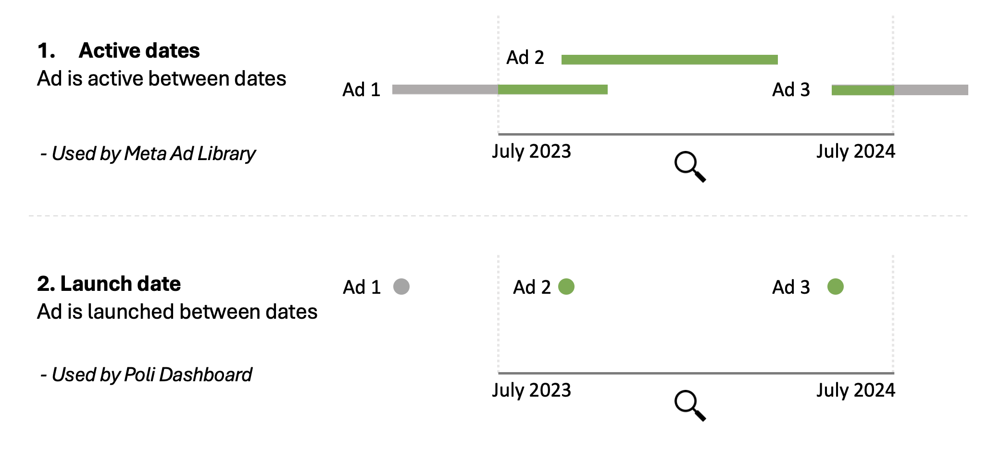

flowchart LR
A["ad_collector.py"] -->|"Creates and configures"| B["FbAdsLibraryTraversal"]
C["fb_ads_library_api.py"] -->|"Provides"| B
B -->|"Constructs and uses URL"| D[("Facebook\nAds API")]
style A fill:#f9d71c,stroke:#333,stroke-width:2px
style B fill:#8ed1fc,stroke:#333,stroke-width:2px
style C fill:#8ed1fc,stroke:#333,stroke-width:2px
style D fill:#f5f5f5,stroke:#333,stroke-width:2px
1 Data collection
1.1 Constructing our request
1.1.1 Example request
To request data from Ad Library API when need to construct a request url. Here is an example:
https://graph.facebook.com/v20.0/ads_archive?unmask_removed_content=true&ad_type=POLITICAL_AND_ISSUE_ADS&access_token=INSERT_YOUR_TOKEN&fields=id,ad_creation_time,ad_creative_bodies,ad_creative_link_captions,ad_creative_link_descriptions,ad_creative_link_titles,ad_delivery_start_time,ad_delivery_stop_time,ad_snapshot_url,currency,delivery_by_region,demographic_distribution,bylines,impressions,languages,page_id,page_name,publisher_platforms,spend,target_locations,target_gender,target_ages,estimated_audience_size&search_terms=.&ad_reached_countries=CA&search_page_ids=&ad_delivery_date_min=2020-05-22&ad_active_status=ALL&limit=500Here are some of the key parameters of our request:
limit=500: request 500 ads at a time.ad_delivery_date_min=2020-05-22: only ads shown to users since 2020-05-22ad_type=POLITICAL_AND_ISSUE_ADS: filter for only political adsunmask_removed_content=true: include ads that broke Facebook’s content guidelinesad_active_status=ALL: ads don’t have to be currently activead_reached_countries=CA: only ads shown in Canada
1.1.2 How do we do this in our code?
To construct the url dynamically based on the current date we adapted some code provided by Meta.
In ad_collector.py, we use a class called FbAdsLibraryTraversal from fb_ads_library_api.py. We then make an instance of this class with the details we need for our API request.
Here is an example:
from fb_ads_library_api import FbAdsLibraryTraversal
collector = FbAdsLibraryTraversal(
facebook_api_keys,
"id,ad_creation_time,ad_creative_bodies,ad_creative_link_captions,ad_creative_link_descriptions,ad_creative_link_titles,ad_delivery_start_time,ad_delivery_stop_time,ad_snapshot_url,currency,delivery_by_region,demographic_distribution,bylines,impressions,languages,page_id,page_name,publisher_platforms,spend,target_locations,target_gender,target_ages,estimated_audience_size",
".",
"CA",
ad_delivery_date_min=start_date,
api_version="v20.0"
)Once our collector is set up, we make the API call using collector.generate_ad_archives(). This returns a list of dictionaries - one for each ad. The ads are returned in batches (of 500) and we wrangle and extract the key details for submission to the database.
1.2 Avoiding API errors
1.2.1 Too much data requested
Some quarto are exceptionally long (~90,000 characters!). This creates inconsistency around how many ads you can safely request at once. To solve this we implement the following sliding window strategy:
Step 1: Start by collecting large number of ads (500)
Step 2: If we encounter “Request less data” error, halve request size
Step 3: Repeat step 2 recursively
Step 4: If we successfully collect all 500, return to Step 1. Otherwise, request problematic ad without body text.
1.2.2 Too many requests made
We use multiple API keys on rotation by creating multiple Meta ‘apps’. This means that if one key reaches the limit total_time=100 then we can switch to a different key.
Renewing API access
Long term API tokens expire after three months so you have to renew them.
1.3 Active vs launched ads
Key distinction
Meta’s API only allows us to request the ads active during a date range, not those launched. If you want launches, you can filter the data afterwards. We submit all of the data to our database, without filtering.

1.4 Daily data collection
We use Github Actions to trigger the collection and storage of ads every day
At 12AM EST, we collect and update all ads active in the past month
At 8AM, 4PM and 8PM EST we collect and update all ads active on the current day